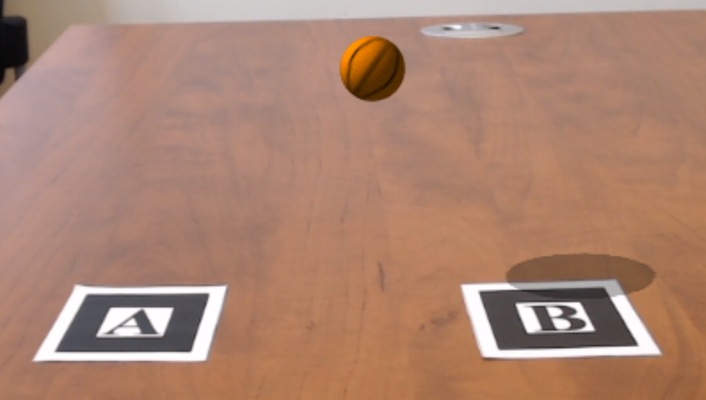

Many cubes
A scene that superimposes different colored cubes on a Hiro, Kanji, and letter markers.

Basic cube
A basic scene that superimposes a cube on a Hiro marker.

Image Texture
An image is positioned to cover a Hiro marker.
Magic cube
Creates a "magic cube effect" that overlays a cube covered with six AR markers in this pattern.

Parabolic path
A basketball launches from a Letter-A marker and falls towards a Letter-B marker, following a parabolic path. The ball casts shadows, and a clipping plane is used to make the ball disappear into the marker.